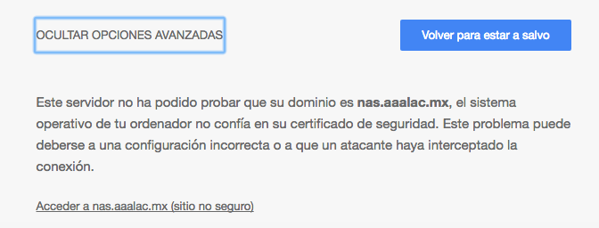
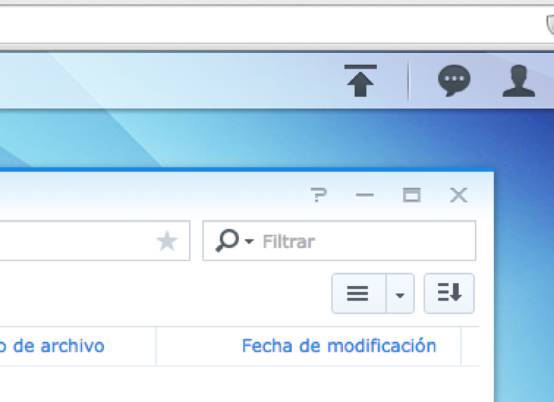

Asociación de Agentes Aduanales de Lázaro Cárdenas
Tec. Antonio Xoyoc Becerra Farias
Como hacer llegar los pedimentos a la asociacion
Diagrama

Consideraciones para enviar los pedimentos
- Se deberá realizar un archivo ZIP con los siguientes características no tener un tamaño mayor 5Mb.
- Contener únicamente hoja de solicitud, boleta de liberación, pedimentos a modular y relación de pedimentos si es necesario.
Nombre del Archivo
- Se deberá nombre el archivo de la siguiente forma mfppppddmmaa-cc.zip
- En donde MF es la identificación del modulación ferrocarril.
- PPPP numero de la patente del agente aduanal.
- En donde DD día que se envía o sube los pedimentos así como MM del mes y AA del año.
- Y por ultimo si es necesario CC es el numero de consecutivo si enviara mas de una vez.
Que necesitamos para subir la informacion
- Internet
- Navegador de ultima generacion('Internet Explorer, Chrome, FireFox, etc.')
- Archivo ZIP
- Usuario y contraseña de la NAS
Paso 1 Dirección
Subir la información a través de browser
Escribir en la barra de direcciones la siguiente dirección como se muestra en la imagen.
Paso 2 Aviso
Aviso de privacidad o certificado de seguridad
Paso 2 Aviso
Aviso de privacidad o certificado de seguridad
Paso 3 Ingreso
Ingresaremos el usuario y la contraseña siguiente
Paso 4 Bienvenido
Nos mostrara la siguiente pantalla, cerrar las ventana de ayuda y de bienvenida
Paso 5 Inicio
En la pantalla inicial podremos ver las aplicaciones las cuales tenemos acceso en donde seleccionaremos el icono de File Station
Paso 5 Icono
Icono de File Station
Paso 6 FileStation
Unas vez abierto el programa nos mostrara la siguiente información.
Paso 7 Carpeta
Seleccionamos la carpeta Modu_Ferr, haciendo un clic sobre ella.
Paso 8 Carga
Hacemos un clic sobre el botón de Cargar, mostrando la siguientes opciones.
Paso 9 Selección
Nos mostrara el explorador de archivos en donde seleccionaremos la carpeta donde se encuentra nuestros archivo a subir.
Paso 10 Notificacion
Nos mostrara mensajes de que esta cargando el archivo así como la finalización de la misma y nos mostrara un nuevo icono indicando que la información se subió con éxito.
Gracias
Por su atencion
Manual de Proyecto de Modulación FerrocarrilEl link esta disponible apartir del 27/05/2016 hasta el 30/06/2016